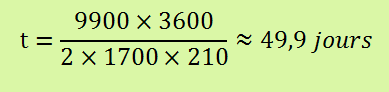

Exercice 4-1
Exercice 4-2
Retour en haut de la pageLa quantité d'énergie est l'énergie globale nécessaire à la réalisation de la fonction d'un système. Elle s'exprime en Ampère heure (Ah) ou en Ampère seconde (As) :
La quantité d'énergie "Q" est une grandeur qui est utilisée pour caractériser les sources d'énergie électriques telles que les piles et les accumulateurs.
La courbe ci-dessous est l'image de l'intensité du courant consommé par un des deux moteurs d'un système de changement de vitesse électrique. Le nombre de cycles effectué en une journée est de 1700. Calculer l'autonomie si le système est alimenté par un accumulateur de 3,7Vcc et d'une capacité de 9900 mAh.
Les quantités d'énergie sont représentées par la surface comprise entre l'axe horizontal et la courbe, elles sont notées Q1, Q2, Q3, Q4 et Q5.
Après avoir effectué l'ensemble du calcul (Q1+Q2+Q3+Q4+Q5), nous obtenons une quantité d'énergie de 210 mA.s pour le cycle complet d'un moteur. Sachant qu'il y a deux moteurs qui effectuent 1700 cycles par jour, l'autonomie sera d'au moins 49 jours.

Retour en haut de la page